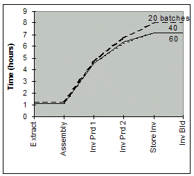
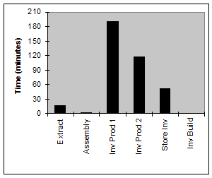
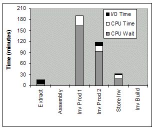
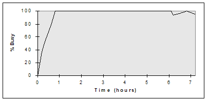
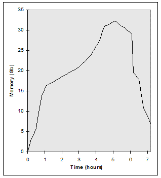
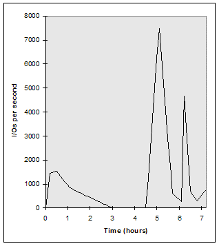
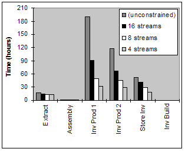
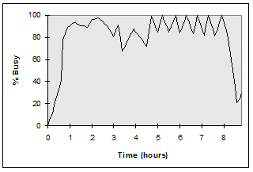
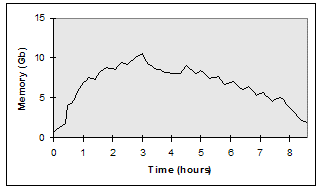
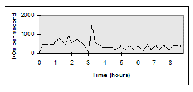

| Example: Service Level Characteristic Analysis |
 |
|
| Related Elements |
|---|
| The purpose of the analysis is to understand the optimum configuration of the business process in order for it to complete
within a target time.
Initial Analysis The workload was simulated as a series of identically sized batches. The effect of varying the number of batches (20, 40 and 60) on the overall billing elapsed time was analysed a given total workload. The figure below shows the cumulative time in each section in hours for each of these batch profiles.  As the number of batches increased, the overall bill run elapsed time for the workload came down dramatically, leveling off at 7.2 hours as the number of batches is increased beyond 40. In the 60-batch case we analyzed the elapsed time for each individual process. In this case each batch contained just less than 1 Million calls. The figure below shows the average elapsed time in minutes for the passage of a single batch though the different processes:  As can be seen, the bulk of the time was spent in the two Invoice Production phases of the process, accounting for 50% and 31% of the total bill run elapsed time respectively. Detailed Analysis The individual IT process times were split into the following components:
The component times for an average batch in the 60-batch case are shown below  For the two Invoice Production processes the "Wait-for-CPU" time is the major contributor. The excessive CPU wait-times result from the contention between large numbers of batches in these CPU-intensive processes. This was a direct consequence of allowing the batches to flow through the pipe in a virtually unconstrained manner. This contention was also reflected in the CPU, I/O and Memory utilisation captured in the following figures:    In this configuration the CPU is running at 100% capacity for almost the entire duration of the business process. Also, the virtual memory requirement is in excess of 30 Gigabytes! The I/O workload is concentrated around the early part of the run, in which the data required for billing is extracted from the database, and the latter part of the run, in which the invoicing data is written back to the database. The I/O workload involved in backing up intermediate transient data stores is also significant, the I/O traffic associated with this giving rise to the peak observed at around 5 hours. Improving Performance To reduce to a more acceptable level the amount of time each batch spends despatched within an IT process (and hence the amount of resource allocated to it) this level of contention must be reduced. Restricting the flow of batches through the business process could do this. To understand the effect of such restrictions, a sequence of simulated bill runs was performed in which the flow of batches through all sections of the business process was constrained. The results of these runs are shown below for 16, 8 and 4 stream configurations, in which no more than 16, 8 or 4 batches respectively can co-exist at any one time. The previous unconstrained results are shown for comparison.  These results show that the times per batch fall considerably as the number of streams is decreased. The introduction of batch restrictions however had a slightly detrimental effect on the overall elapsed time. The time to complete for the entire workload increased to 7.3 hours in the 16-stream case, 7.5 hours in the 8-stream case and 8.8 hours in the 4-stream case. This was due to the increase in time each batch now spends waiting to be despatched. However, given the resources required to sustain the constrained environment it was certain the overheads due to storage paging would far outweigh this increased wait for dispatch time. The result would therefore be a significant reduction in overall billing elapsed time. Evidence of the reduced contention was clearly seen, as shown below, for the 4-stream case:    The CPU utilisation, although still high, follows a more acceptable ‘saw tooth’ pattern rather than being stuck solidly at 100%. The memory picture is also much improved with a peak requirement of just over 10 Gigabytes compared with a previous peak in excess of 30 Gigabytes. The average I/O rate is now spread much more evenly across the period of the business process; the peak requirement now being under 1500 I/Os per second compared with a previous peak of almost 8000 I/Os per second. Conclusion The results of this analysis highlights the need to control the flow of batches to remove the bunching effects clearly seen in the unconstrained configuration and so restricts the usage of resources to an acceptable limit. By throttling back on the workload the percentage of the time spent by the operating system balancing the processing is much reduced, increasing the time doing useful work. This analysis shows it will be possible to balance the workload such that one night’s bill processing would fit into one night’s batch window, the size of processor required can be confidently estimated. |
| © Copyright IBM Corp. 1987, 2012 All Rights Reserved Property of IBM These materials are intended only for use as part of an IBM engagement |